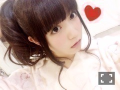
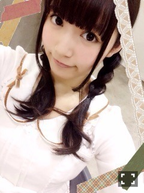
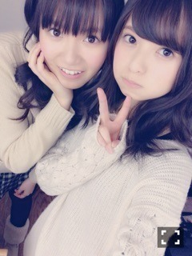
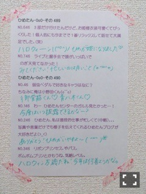

| 2015/02 02 Mon | ひめたん-OoO-その518 |

土曜日は東京個別握手会でした！
遊びに来てくださったみなさん
ありがとうございました( ˇωˇ )
お留守番ちーむのみなさん
レポしますよ～
1部 おろし巻き
2部 ポニーテール


3部 みつあみ
4部 ツインテール

前日は都内で大雪が降ったので
握手会は大丈夫かなー？って
心配だったのですが
見事に晴れました\( ˆoˆ )/
部ごとのはじめのほうに
来てくださった方は
ひめ手が冷たくてごめんね！
みなさんと握手して
あったまりました♡♡
11th選抜発表後初の個握だったけれど
みなさん励ましてくださったり
応援するよ！って
前向きな言葉をたくさん
掛けてくださって
ひめはパワーを貰いました（ ˆoˆ ）
11thの製作も頑張るから
完成を楽しみにしていて下さいね☆
握手会に来てくださる
みなさんの顔を見てたら
この人たちに喜んで貰えるように
もっと頑張らなければ！って
いつも励みになります( ˇωˇ )
次の握手会も楽しみ！
来てくださるみなさん
よろしくお願いします♡
来週は土日～！！
4部のツインテールだにゃ

のぎ天はゴルフサークル！みてね！
スクフェスはなんとかギリギリで
かよちんゲットできたよ～
写メはあすかりんだよー❁

今夜はいつもよりも少しだけ
多めに返してますよ～
まとめてみて思ったけれど
食べ物の話題多いなあ

 ひめたんは牡蠣より肝！？
ひめたんは牡蠣より肝！？
肝も最近好きだけど
牡蠣は小さい頃から食べてるから
やっぱり好きですよ！
東京に来て冬になるとごはん屋さんで
「広島県産 牡蠣」ってよく見るから
誇りに思います（＾ω＾）美味
ひめは雪降ったらはしゃぐ人？
それとも冷めて達観しちゃう？
後者かな......(´-_-｀)
ひめたんはうどんの出汁は
関西と関東どっちが好き？
関東に来て関東の食べるようになった今
関西のが恋しい！
〆は､うどん派or御飯派､どっち?
どっちも好きだけど
ごはんがいいなあ
お誕生日とか関係なしに、
プレゼントって貰ってくれるの？
ひめたんが好きそうな物みつけた♪
わー嬉しい( ´•̥ω•̥` )♡
ありがとう！もちろんだよー！
ひめも何でもない日にでも
贈り物するの好きだよ～
なんか疲れが取れない時って
ひめたんは何か特別なこととか
やってる？あったら教えて！
いつもよりゆっくり
お風呂に浸かるかな(＊^o^＊)
夜にミルクティーとかいれたりして
寝る前にまったりするよ～
ひめたん普通のチョコレートと
ホワイトチョコどっちが好き？
普通の！ミルクチョコレート！
ホワイトはひめには甘すぎる。
そういえばこの前メンバーと
ミルク派？ホワイト派？って話したなあ
ひめたんの定番の朝ごはんは？？
これってのはないけれど
強いて言うならパン派かな～
ひめたんはバスケで
ダンクと3ポイントシュート
どっちのほうがかっこいいとおもう？
3ポイントかな？個人的に。
ダンクもかっこいいけどね
基本的にバスケの技って
キマるとかっこいいよね～
ひめはドリブルで運んでも
シュートが決まらない子です昔から。
ひめたんはのぎ天は
スマホで見てる？パソコンで見てる？
スマホ\( ˆoˆ )/
ひめたんの日記の
コメント欄下２ケタに46を踏んだ方へ
手書きでコメ返するコーナー
＼ ひめたん46 ／



いつもたくさんのコメント
ありがとうございます！
握手会やのぎ天の感想
よかったら聞かせてください☆
そうそう、
ヘタレ！って言われたい人が
たくさんいたんだけど
どゆことなん(´・ω・｀)笑
2月！
カレンダーめくるのは好きだけど
新しい乃木坂カレンダーは
なんかめくれない( >_< )
みんな天使だよ～
白がよくお似合いだよ～
(＊´・ω・＊)
コメント(973)
2015/02/02 23:30